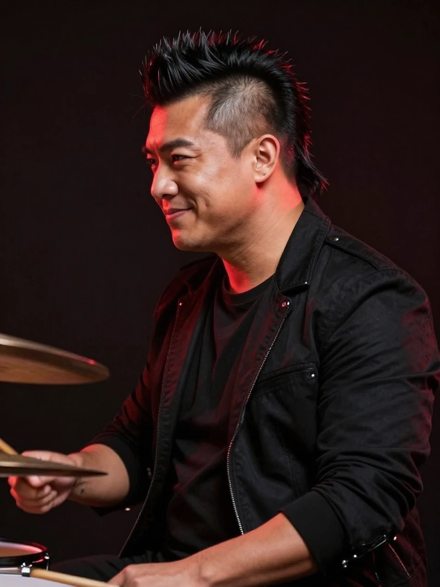

Four identities. Four stories. One shared obsession with turning pain into sound. Behind every name is a reason — and behind every reason is a song.
No one knows his real name. What they do know is that the moment Wraith steps on stage, the air changes — something heavier settles in, something older.
He came from nowhere and built everything from silence. Every song is a room someone used to be trapped in, turned into a door. The darkness in the music isn't performance — it goes deeper than that.
As the band's architect and emotional core, the music takes shape in places no one else is allowed into — brutal, honest, and laced with the kind of beauty that only survives after everything else has burned.
"The songs find us. We just don't get in the way."
She doesn't ask for your attention. She takes it. Siren's voice cuts through frequencies other singers can't reach — a precision instrument wrapped in controlled fury.
There's a stillness to her that unsettles people. She speaks only when it matters, and when she does, it lands like a blade. Every word, every note, is chosen — nothing wasted.
Equally at home behind a bass, a guitar, or a piano, Siren is the band's most versatile force — the connective tissue between Wraith's raw rage and the melody that makes it bearable.
"You'll feel it before you understand it."
Crimson doesn't back anything up — she sets it on fire. Branded in red from the tips of her hair to the fire in her eyes, she is chaos made disciplined, fury made musical.
She found the band through a series of near-misses and wrong turns that somehow all pointed to the same stage. The synthpad under her hands and the bass in her grip are extensions of the same anger she has carried since childhood — but now it has shape, rhythm, and somewhere to go.
Her layered vocal harmonies and relentless low-end drive give 2DieFor its physical weight — the part of the music you feel in your chest before you understand it with your ears.
"Red isn't a colour. It's a warning."

StyxEvery band has a heartbeat. In 2DieFor, the heartbeat hits like a freight train. Styx is the engine room — broad-shouldered, immovable, and quietly the most dangerous person on stage.
He treats every set like a controlled demolition. Precise where it needs to be precise. Brutal where it needs to be brutal. Never confusing the two.
He doesn't talk much between songs. He doesn't need to. When the sticks come down, everything he has to say is already perfectly clear.
"The beat doesn't wait for anyone. Neither do I."